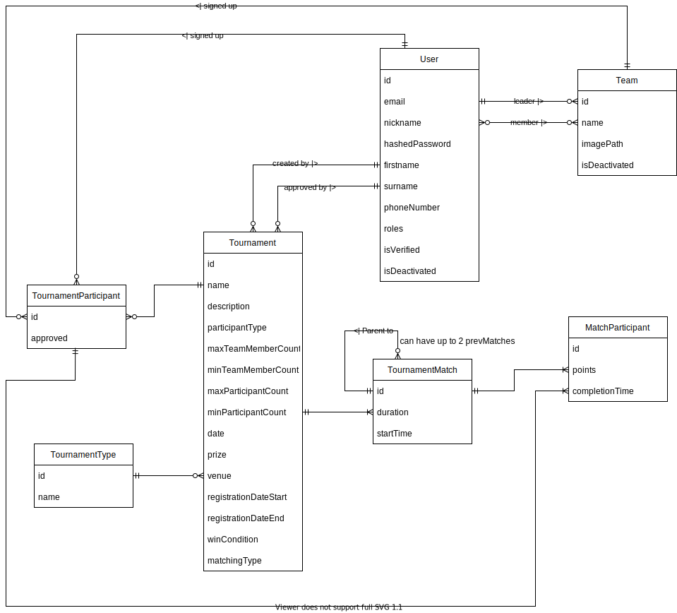

Studentské turnaje
- Autoři
- Michaela Macková
xmacko13@stud.fit.vutbr.cz -
vytvoření entit, správa turnajů, registrace do turnajů, testovací data, testování
- Ivan Mudrák
xmudra03@stud.fit.vutbr.cz -
založení projektu a základní struktura, JS, generování zápasů, autentifikace uživatele, design stránek
- Tomáš Zaviačič
xzavia00@stud.fit.vutbr.cz -
kontrola validity formulářů, kontrola unikátnosti dat, statistiky, deaktivace týmů a účtů, komentované video
- URL aplikace
- https://www.stud.fit.vutbr.cz/~xmudra03/IIS/public/index.php
Uživatelé systému pro testování
Uveďte prosím existující zástupce všech rolí uživatelů.
| Email | Heslo | Role | Upřesnění |
|---|
| admin@admin.com | admin | Administrátor | |
| | Registovaný uživatel | |
| - | - | Neregistrovaný uživatel | |
(Diagram případů užití není nutné vkládat, pokud IS implementuje role a případy užití definované zadáním.)
Video
https://drive.google.com/file/d/1hCrM4-xojfBnlBW85mVXQ4S_dlY3Y-pO/view?usp=share_link
Video je přístupné všem uživatelům VUT Brno.
Přiložte odkaz na komentované video demostrující použití informačního systému. Zaměřte se na případy užití definované zadáním (např. registrace uživatele, správa uživatelů a činnosti jednotlivých rolí). Video nahrajte například na VUT Google Drive, kde ho bude možné přímo spustit z odkazu.
Rozšíření
Zde popište, rozšíření.
Implementace
- Administrátor:
- Spravuje uživatele
- UserController a funkce v souboru UserManager + UserRespository
- Schvaluje turnaje
- TournamentController a funkce v souboru TournamentManager + TournamentRespository
- Vytváří a edituje typy turnajů
-
- Spravuje role uživatelů
-
- Edituje a deaktivuje uživatele
-
- Edituje a deaktivuje týmy
-
- Edituje a odstraňuje turnamenty
-
- Registrovaný uživatel:
- Edituje svůj profil
- UserController a funkce v souboru UserManager + UserRespository
- Zakládá týmy - stává se správcem týmu (může editovat a deaktivovat tým)
- TeamController a funkce v souboru TeamManager + TeamRespository
- přidává uživatele do týmu, kteří stávají se členy týmu
- TeamController a funkce v souboru TeamManager + TeamRespository
- registruje svůj tým na turnaj
- TournamentController a funkce v souboru TournamentManager + TournamentRespository
- zakládá turnaj - stává se správcem turnaje (může editovat a mazat turnaj)
- TournamentController a funkce v souboru TournamentManager + TournamentRespository
- zadává parametry turnaje
- TournamentController a funkce v souboru TournamentManager + TournamentRespository
- schvaluje hráče turnaje (jednotlivce/týmy dle typu turnaje)
- TournamentController a funkce v souboru TournamentManager + TournamentRespository
- spouští turnaj, generuje harmonogram turnaje (ručně nebo automaticky - rozlosování)
- TournamentController a funkce v souboru MatchManager + MatchGenerator + TournamentMatchRespository
- zadává výsledky zápasů (výsledek zápasu se uvažuje jako dvojice (počet bodů týmu/hráče 1, počet bodů týmu/hráče 2))
- MatchController a funkce v souboru MatchManager + TournamentMatchRespository
- účastní se turnaje (registruje se jako jednotlivec nebo je členem registrovaného týmu) - stává se hráčem turnaje
- TournamentController a funkce v souboru TournamentManager + TournamentRespository
- vidí svůj program (harmonogram zápasů)
- MatchController a funkce v souboru MatchManager + TournamentMatchRespository
- přednostně vidí výsledky svých zápasů
- MatchController a funkce v souboru MatchManager + TournamentMatchRespository
- Neregistrovaný uživatel:
- prochází profily a statistiky hráčů, týmů a turnajů s výsledky
- UserController, TeamController, TournamentController, MatchController + jejich soubory Manager a Repository
Stručná dokumentace k implementaci, která popisuje, které části projektu (např. PHP skripty) implementují jednotlivé případy použití.
Databáze
Zde vložte grafické schéma relační databáze (tabulek v databázi).

Instalace
Stručně popište:
- softwarové požadavky:
- PHP 8.1
- MySQL
- composer - doinstaluje potřebné php balíčky (hlavně Symfony 6.1.7)
- npm - doinstaluje a zkontroluje JS a CSS balíčky
- na serveru je nutné přetáhnout soubory projektu a provést následující příkazy (v hlavním Symfony adresáři)
composer installnpm installnpm run devphp bin/console doctrine:database:createphp bin/console make:migrationphp bin/console doctrine:migrations:migrate
- pro naplnění databáze testovacími daty je nutné spustit jeden z následujících příkazů:
php bin/console doctrine:fixtures:load - přepíše aktuální data v dbphp bin/console doctrine:fixtures:load --append - přidá data do db (bez přepsání stávajících)